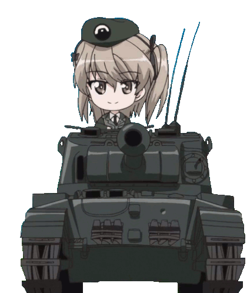
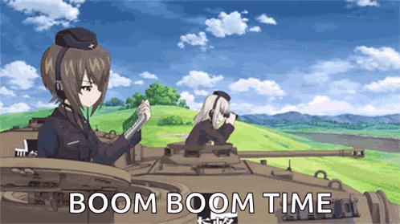

Kuromorimine is based in Kumamoto City. However, as their school ship is too large to dock at any of the ports in Kumamoto Prefecture, they have to dock elsewhere. Kuromorimine is the most well-known and respected school in the high school senshado league, a reputation gained by their excellent standard of senshado. The school adheres to the generations-old doctrine of the Nishizumi style, which, backed by a large arsenal of powerful tanks, ensures it is recognized as the strongest and most prestigious of the senshado schools. As a result, the school is highly focused around senshado, to the point where the senshado team is held in adoration by the other students. This emphasis creates a school atmosphere that places high value on the principles of justice, law-abiding conduct, persistence and determination. However, it is also the strict and rigid doctrines of the Nishizumi style that translate into the classroom, creating an exacting, punitive and high-pressure environment amongst the students that has only recently begun to change. Although the school is universally respected for its strength, it is disliked by many of the other high schools for its rigid victory-oriented style and distinct lack of moralistic concessions, which ultimately culminated with the controversy of Miho Nishizumi's actions during the 62nd National High School Senshado Tournament.
Kuromorimine utilizes the teachings of the Nishizumi-style, which are closely related to the Blitzkrieg doctrine. The school makes use of large numbers of heavy tanks and assault guns, according to its strategy of superior firepower and armour. Their tactics are characterized by their tight formations and aggressive frontal assaults. Their fire control is known to be well coordinated and very accurate. The students are reputed to almost never retreat. Unfortunately, these strengths resulted in a number of distinct weaknesses due to the overspecialisation of their overall strategy: Kuromorimine lack tactical flexibility and rely heavily on coordinated team effort. Tanks that are inadvertently separated from the main force or engaged in multiple independent skirmishes tend not to last long.